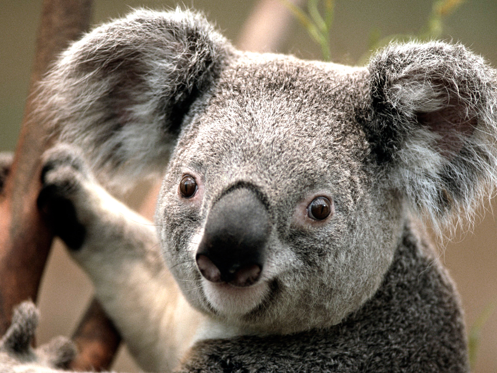

KOALA
Koalas are marsupials native to Australia, belonging to the family Phascolarctidae. Their scientific name is Phascolarctos cinereus. Koalas are known for their fluffy ears, large black noses, and a diet primarily consisting of eucalyptus leaves. They are found in coastal regions of eastern and southeastern Australia.
Koalas are herbivorous and have a specialized diet, relying on eucalyptus leaves for nutrition. They spend most of their time sleeping in trees, as their diet is low in energy. Koalas are solitary animals and have a unique vocalization that can be heard during mating season.
WHERE WILL YOU FIND THEM
You will find the koalas at pen D10, in the Australian wildlife area.